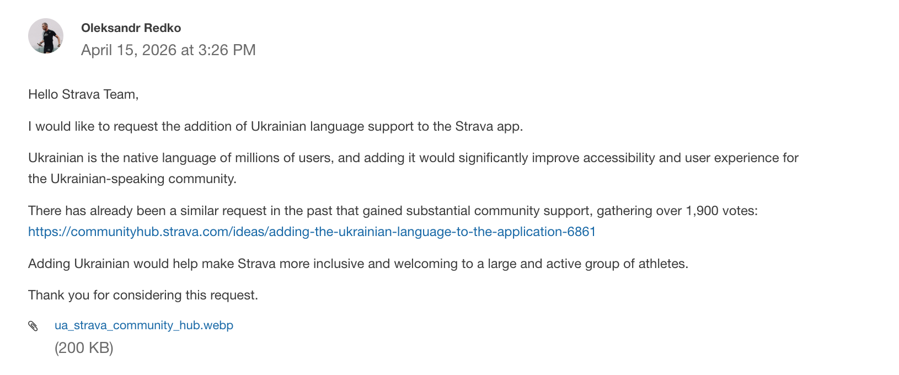
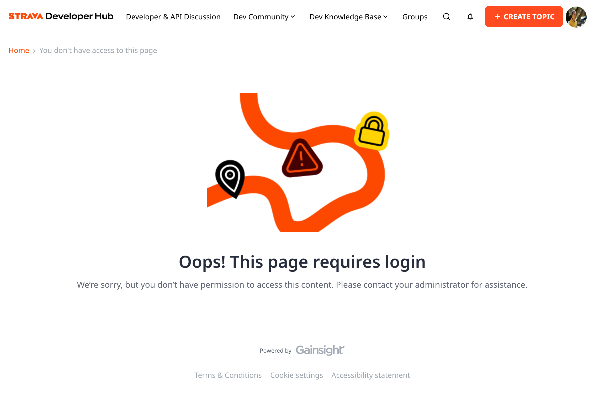
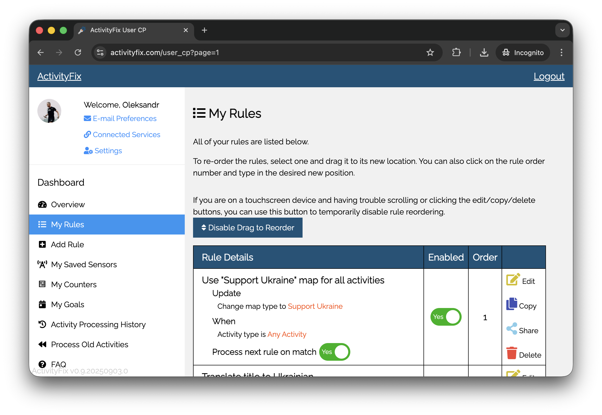

Підтримайте появу української в Strava
Підписка Strava Subscription коштує 3 гривні 60 копійок на день. Що більше підписників з України, то ймовірніше, що Strava додасть українську мову.
Оформити підписку StravaЗапит в Strava Support на додавання української
Щоб підсвітити важливість української в Strava, можна створити запит до техпідтримки з проханням додати українську мову.
15 квітня 2026 року користувач Олександр створив такий запит, і отримав відповідь, що вони передадуть його відповідному відділу.

Чим більше людей створить такі запити, тим більше шансів, що команда Strava зверне увагу та додасть українську офіційно. Наразі список мов, які підтримує Strava, є тут.
Детальна інструкція із створення запиту в техпідтримку Strava
Заповнювати найкраще англійською мовою. Можна скористатися ChatGPT для допомоги.
- Увійдіть на сторінці Strava Support "Submit a Request".
- Виберіть "Feature Requests" в меню "Choose a category".
- В полі "Subject" вкажіть "Add Ukrainian Language".
-
В полі "Description" опишіть, чому важливо додати українську мову. Приклад тексту, який можна підправити за допомогою ChatGPT:
Hello Strava Team,
I would like to request the addition of Ukrainian language support to the Strava app.
Ukrainian is the native language of millions of users, and adding it would significantly improve accessibility and user experience for the Ukrainian-speaking community.
There has already been a similar request in the past that gained substantial community support, gathering over 1,900 votes: https://communityhub.strava.com/ideas/adding-the-ukrainian-language-to-the-application-6861
Adding Ukrainian would help make Strava more inclusive and welcoming to a large and active group of athletes.
Thank you for considering this request.
- В полі "Product Area" виберіть "Other".
- В полі "Platform" виберіть "Both mobile & web".
- Натисніть "Submit". Вам на пошту прийде підтвердження про отримання запиту.
Ви чудові, дякуємо за вашу підтримку!
Ідея додати українську в Strava (неактивна)
Оновлення на 24 березня 2026 року. Після реорганізації платформи Strava прибрала всі ідеї з порталу Community Hub, зокрема й найпопулярнішу тему про додавання української мови.
Нижче історична інформація про ідею та її статус станом на листопад 2025 року.
Недоступна ідея з додавання української на Strava Developer Hub
Станом на квітень 2026 під час відкриття ідеї з додавання української мови з'являється "Oops! This page requires login" для всіх користувачів. Навіть для тих, хто авторизований.

20 травня 2023 року на порталі Strava Community Hub користувач Ihor створив ідею для додавання української мови у додаток і на сайт Strava.
Please add Ukrainian to the app. At least for basic functions. After the outbreak of the war, the issue of language became very important for Ukrainians. Many Ukrainians have switched to their native language, and they would be very grateful to use Ukrainian instead of russian.Скріншот нижче зроблений у листопаді 2025 року, коли тема ще була доступна на порталі та мала 1900 голосів і 740 коментарів.

Як налаштувати Strava на англійську
Якщо ви знаєте англійську мову, налаштуйте додаток і вебсайт Strava так, щоб інтерфейс відображався цією мовою.
Якщо не знаєте англійську, читайте наступний розділ.
Для цього потрібно виконати три кроки:
- Змінити мову додатку (iOS, Android).
- Змінити мову веб-інтерфейсу.
- Змінити мову, яку Strava використовує для назв активностей.
1. Як змінити мову додатку
Як змінити мову в iOS
Спочатку додайте англійську мову по цій інструкції. Далі виконайте наступне:
- Відкрийте програму "Параметри" (Settings)
- Натисніть "Програми" (Apps).
- Виберіть додаток "Strava".
- У "Пріоритетна мова" (Preferred Language) виберіть "English".
Важливо вибрати саме англійську. Якщо встановити українську, то Strava відображатиметься російською.

Як змінити мову в Android
Дійте за цією інструкцією:
- Відкрийте додаток "Налаштування" (Settings)
- Натисніть "Система" (System) > "Мови" (Languages) > "Мови додатків" (App Languages).
- Виберіть додаток "Strava".
- Виберіть "English".
2. Як змінити мову веб-інтерфейсу
- Увійти в Strava в браузері з комп'ютера.
- Долистати вниз, у футері праворуч вибрати мову "English (US)" або "British English".

3. Як змінити мову, якою Strava називає активності
Щоб змінити мову, яку Strava використовує для автоматичних назв активностей, потрібно змінити мову додатку або веб-інтерфейсу.
Як користуватись Strava, якщо не знаєте англійську
Якщо ви не знаєте англійську, ви можете використовувати вбудований в браузер Chrome перекладач або завчити кілька англійських слів.
Використання вбудованого в Chrome перекладача
Перекладач в десктопному браузері Chrome
Щоб Chrome автоматично перекладав Strava з англійської, потрібно зробити таке:
- Переконатись, що браузер відображається українською.
- Увійти в Strava.
- Натиснути в браузері праворуч вгорі "Налаштування" - "Перекласти", вибрати "Українська".
- Додатково в меню перекладу праворуч вибрати галочку "завжди перекладати з такої мови: англійська".

У результаті всі сторінки Strava автоматично перекладатимуться українською за допомогою браузера:


Перекладач в мобільному браузері Chrome (iOS)
Щоб Chrome в iOS автоматично перекладав Strava з англійської, потрібно зробити таке:
- Переконатись, що браузер відображається українською.
- Увійти в Strava з мобільного браузера. Якщо після входу перенаправляє в додаток Strava, відкрийте strava.com в браузері ще раз.
- Натиснути в браузері праворуч внизу "Налаштування" - "Перекласти", вибрати "Українська".


Історія боротьби за українську мову в Strava
Internationalizing Strava
Про проблеми локалізації від інженерів Strava.
Читати на Medium →Переклад Strava українською - боротьба продовжується
Публікація в блозі Yarema про спроби донести до Strava техпідтримки важливість української мови.
Читати в блозі →Adding the Ukrainian language to the application
Створення ідеї на Strava Community Hub для додавання української мови.
Переглянути на Community Hub →Please add Ukrainian language in Strava
Дискусія на Reddit про додавання української мови в Strava.
Читати на Reddit →Updates to the Community Hub
Strava переписує Community Hub, ідея для додавання української мови в Strava більше недоступна.
Переглянути на Community Hub →Strava adds 10 new languages
Strava додала 10! нових мов, але серед них немає української.
Переглянути на Strava Stories →Як додати карту Support Ukraine
Наприкінці березня 2022 року Strava додала карту Support Ukraine, щоб підтримати Україну.

Але в листопаді 2025 року ця та інші типи карт зникли з додатку та сайту Strava. Вони були замінені на "Causes". Додатково Strava дозволила вставляти посилання на сторінки підтримки справи в опис активності. Але ж ми хочемо бачити карту "Support Ukraine" на своїх маршрутах!
На щастя, є можливість додавати карту Support Ukraine програмно через API. Станом на кінець листопада 2025 року карти продовжують відображатися в додатку та на сайті.


Також є петиція, що закликає Strava повернути карту Support Ukraine офіційно. Підтримати її можна тут.
Як встановити карту "Support Ukraine" через ActivityFix
Існує сторонній веб-сайт ActivityFix, який дозволяє редагувати активності в Strava залежно від різних параметрів. Під капотом використовується Strava API. Алгоритм такий:
- Увійдіть в ActivityFix через ваш акаунт Strava.
- Ліворуч на панелі "Dashboard" виберіть "Add Rule".
- Введіть наступні параметри для правила:
- What would you like to call this rule: Use "Support Ukraine" map for all activities.
- What should be changed: Change map type to Support Ukraine.
- When should it be changed: Activity type is Any Activity.
- If the rule matches: Yes: Continue processing remaining rules.
- Натисніть "Save Rule". Його буде додано в список правил "My Rules".

- Опціонально: можна перевірити правило на одній активності, натиснувши "Test Rule".
Після цього всі нові активності, які ви завантажите в Strava, автоматично отримуватимуть карту "Support Ukraine".
Існує можливість застосувати правило до наявних активностей, натиснувши "Process Old Activities". Дивіться інструкцію на YouTube ActivityFix.
Схожим чином можна вставляти карту Support Ukraine через інші сторонні сервіси, наприклад, Strautomator.

Як встановити карту "Support Ukraine", використовуючи Strava API
Якщо ви вмієте програмувати, можна додати карту "Support Ukraine" через Strava API, використовуючи Update Activity ендпоінт. Алгоритм наступний:
- Отримуємо токен доступу по інструкції.
- Виконуємо PUT запит на ендпоінт https://www.strava.com/api/v3/activities/{activity_id} з JSON тілом запиту {"selected_polyline_style":"ukraine"}.
curl -X PUT "https://www.strava.com/api/v3/activities/{activity_id}" \
-H "Authorization: Bearer {access_token}" \
-H "Content-Type: application/json" \
-d '{"selected_polyline_style":"ukraine"}'
У запиті {access_token} - токен доступу з першого кроку, {activity_id} - ідентифікатор активності.
Параметр selected_polyline_style не задокументований і може змінитися в майбутньому. Всі його значення описані тут.